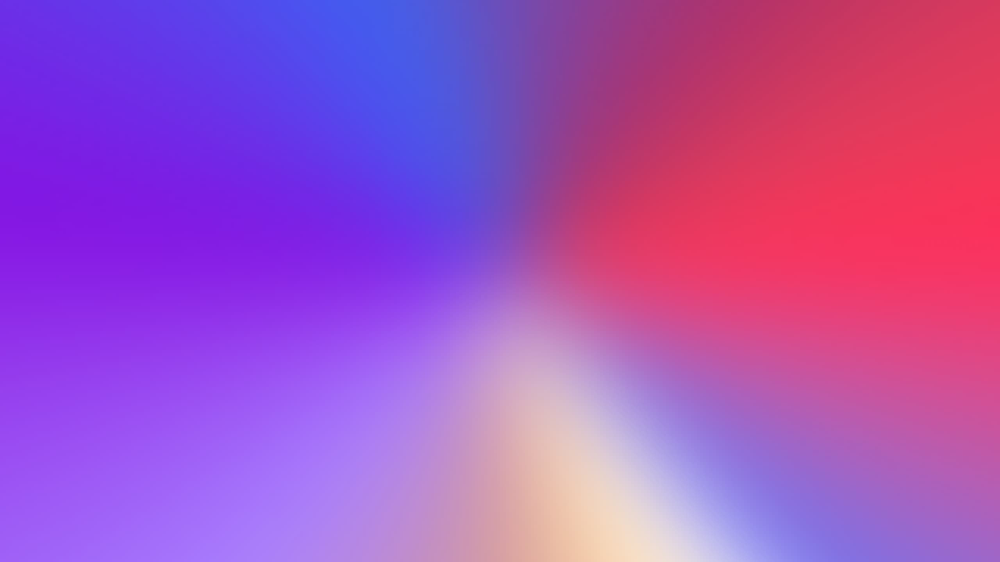
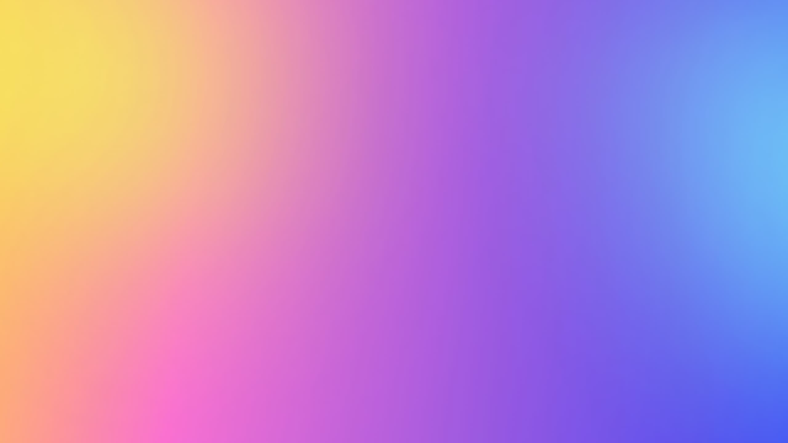
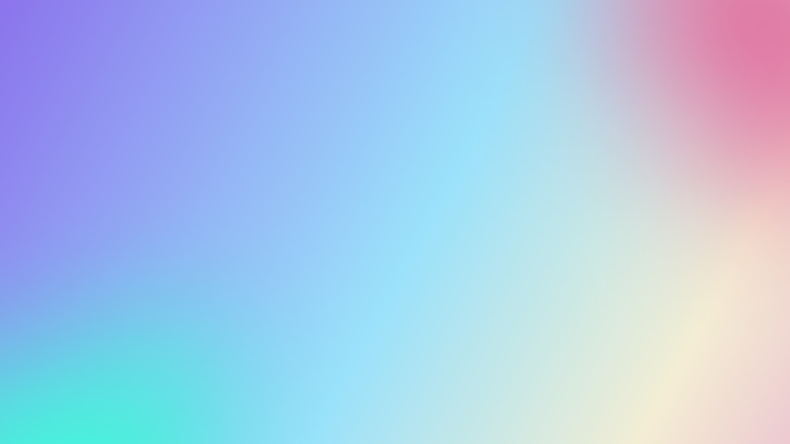
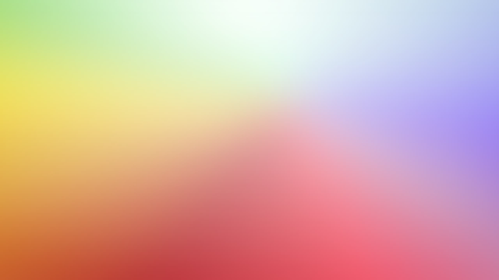

<div class="container">
  <div class="main">
    <div
      class="title"
      [ngStyle]="{ 'flex-direction': titleDirection.get(currentScreenSize) }"
    >
      <div>Angular</div>
      <div class="logo-uvcanvas-main">
        <mat-icon svgIcon="icon_uvcanvas"></mat-icon>
        {{ title | uppercase }}
      </div>
    </div>

    <div class="npm-install">
      <code>npm install ngx-uvcanvas --save</code>
    </div>

    <div class="desc">
      <span>创意来源</span>
      <a href="https://react.dev/" target="_blank"> React.js </a>
      <span>开源组件</span>
      <a href="https://uvcanvas.com/" target="_blank">
        <span> {{ "uv-canvas" | uppercase }}</span>
      </a>
      <span> ，使用</span>
      <a href="https://angular.dev/" target="_blank"> Angular </a>
      <span>实现。</span>
    </div>

    <div class="more">
      <button mat-raised-button color="basic" (click)="openGithub()">
        <mat-icon svgIcon="icon_github"></mat-icon>
        <span>Github</span>
      </button>
      <button mat-raised-button color="accent" routerLink="/docs">
        <span>现在开始</span>
        <mat-icon iconPositionEnd class="animate__animated animate__fadeInLeft">
          arrow_forward
        </mat-icon>
      </button>
    </div>

    <div class="slide-wrap">
      <div class="slide-stage">
        <div class="slide slide-0">
          
        </div>
        <div class="slide slide-1">
          
        </div>
        <div class="slide slide-2">
          
        </div>
        <div class="slide slide-3">
          
        </div>
      </div>
    </div>
  </div>

  <div class="extra spacer">
    <div class="components">
      <h2>Components</h2>
      <div class="preview-part">
        <app-all-components
          [cols]="demoColsMap.get(currentScreenSize) || 2"
        ></app-all-components>
      </div>
      <div class="preview-all">
        <button
          mat-raised-button
          color="accent"
          routerLink="/docs/all-components"
        >
          <mat-icon>sentiment_satisfied</mat-icon>
          查看更多
        </button>
      </div>
    </div>
  </div>
  <!-- <div class="footer">footer</div> -->
</div>
